★Graphic Tools Guide
★セガペインタユーザーズマニュアル/
★Graphic Tools Guide
★セガペインタユーザーズマニュアル/
■
｜
進む▼
セガペインタユーザーズマニュアル
1.はじめに
■概 要
- 『Sega Painter』は、PICT・DGT2等のフォーマットで保存されている複数の画像データを読み込み、一般的なペイントツールとして編集を行うアプリケーションです。
編集されたデータは、オブジェクト登録し、簡易アニメーションとして再生することができます。
また、ターゲットボックスを使用して、家庭用TVモニタにリアルタイム表示することも可能です。
■注 意
- 『Sega Painter』は、起動時の所要メモリは約4MBですが、動作中にそれ以上の「テンポラリメモリ」を必要とする場合があります。Macintoshのメモリを十分に確保してから使用するようにしてください。
■制限事項
- 『Sega Painter』は、以下のセガ開発ターゲットに対応しています。
サターンターゲットModel-S グラフィックスボックス
サターン カートリッジ デベロップメントシステム(通称、CartDev「カートデブ」)
- 接続の際の注意事項は、ターゲット付属のマニュアル等を参照してください。
■起動画面
- ターゲットボックスが接続された状態でアプリケーションを起動すると、以下の画面が表示されます。
接続したいターゲットボックスを選択して、「O K」をクリックします。
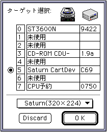
- TV画面のサイズを変更することができます。
- Saturn(320×224)：320ドット×224ドットで表示します。
- Saturn(352×224)：352ドット×224ドットで表示します。
- Saturn(320×240)：320ドット×240ドットで表示します。
- Saturn(352×240)：352ドット×240ドットで表示します。
■操作画面
- 「Sega Painter」には、様々なウィンドウが表示されます。
- ●書類(描画・編集)ウィンドウ
- 標準的な描画・編集操作を行うウィンドウで、複数の表示が可能です。このウィンドウに対する編集内容が書類(ファイル)として保存されます。
書類ウィンドウは、作業目的に応じた2つのレイヤーを持ち、それぞれ、描画(ペイント)レイヤー・編集(エディット)レイヤーと呼びます。描画レイヤーは、一般的なペイントツールに準じた描画を行います。編集レイヤーは、アニメーションに登録されるオブジェクト(パターン)を指定します。個々のレイヤーは、作業中に切り替え可能で、その編集内容は相互に関連しあいます。
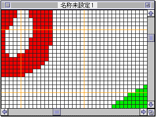
- ●ツールパレット
- 各ウィンドウに対する編集作業の機能を決定します。
詳細は、ドキュメント「3.ツールパレット」を参照してください。
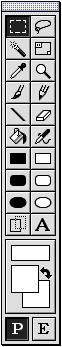
- ●モニタウィンドウ
- ターゲットモニタのシミュレーションを行うウィンドウです。一番手前の書類ウィンドウ(カレントウィンドウ)のイメージが表示されます。
アニメーションは、このウィンドウに表示されます。
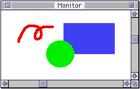
- ●情報ウィンドウ
- カレントウィンドウの情報が表示されます。
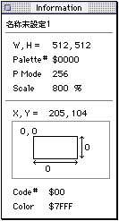
- ●カラーピッカウィンドウ
- セガカラーピッカを表示します。
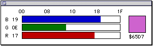
- ●パレットウィンドウ
- カレントウィンドウのパレットテーブルが表示されます。前景色に設定されているパレットコードがマーキー表示(アニメーションする点線枠)されます。
詳細は、「メニュー」を参照してください。
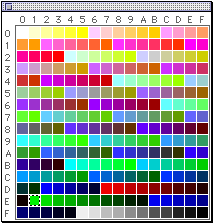
- ●パターンウィンドウ
- 現在設定されているパターンが表示されます。現在選択されているパターン(カレントパターン)がマーキー表示されます。
詳細は、「メニュー」を参照してください。
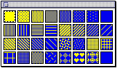
- ●パネルウィンドウ
- アニメーションのコントロールを行います。
詳細は、ドキュメント「5.アニメーション」を参照してください。
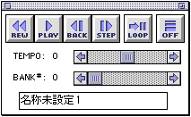
- ●カラー編集ウィンドウ
- カラーの編集を行います。
詳細は、ドキュメント「4.カラー・パレット」を参照してください。
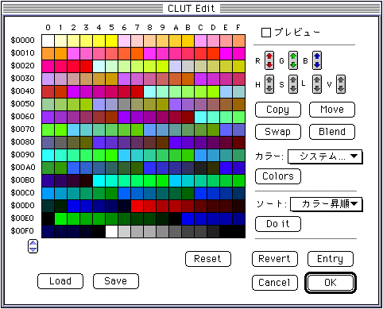
- ●パレット編集ウィンドウ
- 選択されている書類ウィンドウのパレットの編集を行います。
詳細は、ドキュメント「4.カラー・パレット」を参照してください。
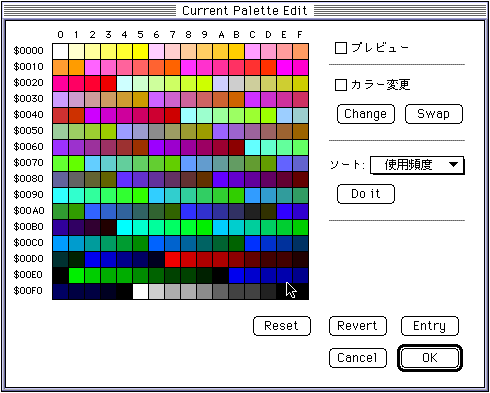
- ●アニメーション登録ウィンドウ
- 簡易アニメーションとして再生するオブジェクトの登録を行います。
詳細は、ドキュメント「5.アニメーション」を参照してください。
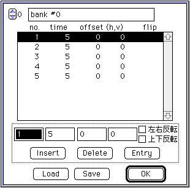
- ●テンプレート
- 『Sega Painter』のいくつかの機能をボタン化したウィンドウです。
それぞれのボタンにカーソルを合わせた時に簡単な機能の説明が表示されます。
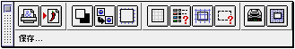
■
｜
進む▼
★Graphic Tools Guide
★セガペインタユーザーズマニュアル/
Copyright SEGA ENTERPRISES, LTD., 1997